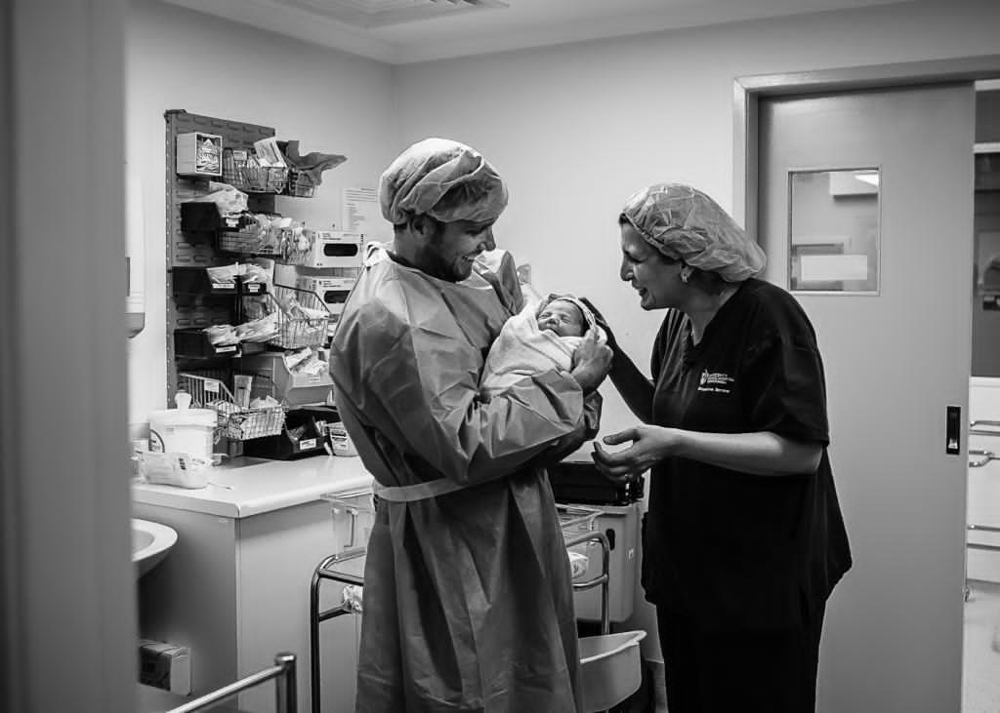

Dr. El-Bialy completed her specialist training (CCT) in the United Kingdom and worked as a consultant in the UK. Then she moved to Australia and worked as a Staff Specialist in NSW, becoming a fellow of the Royal Australian and New Zealand College of Obstetrics and Gynaecology (FRANZCOG).
Dr.El-Bialy
Dr. Gehan El-Bialy
Female Specialist in Obstetrics and Gynaecology
MBBCh, MSc, MD, MRCOG, CCT, FRANZCOG


In addition to being a full time clinician, Dr. El-Bialy has been actively involved in teaching & training of medical students, GP Diploma Obstetrics Trainees, and RANZCOG Specialist Trainees.
Member of Professional Organisations:
- Royal Australian & New Zealand College of Obstetricians & Gynaecologists (RANZCOG)
- Royal College of Obstetricians and Gynaecologists (RCOG), UK